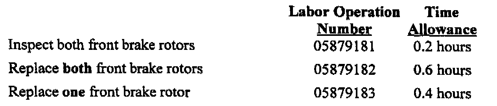

Recall - Front Brake Rotor Corrosion: Overview
June 2000Safety Recall No. 879--Front Brake Rotors
Models:
1996-1998 (ZJ) Jeep(R) Grand Cherokee
1996-1999 (XJ) Jeep Cherokee
NOTE:
This recall applies only to the above XJ model vehicles built through October 15, 1998 (MDH 1015XX),
NOTE:
Only the above vehicles sold or currently registered in "Salt Belt" states (where large amounts of road salt are used for snow and ice removal) are involved. (See "Owner Notification & Service Scheduling" section for a listing of salt belt states.)
IMPORTANT:
Some of the involved vehicles may be in dealer used vehicle inventory. Dealers should complete this recall service on these vehicles before retail delivery. Dealers should also perform this recall on vehicles in for service. Involved vehicles can be determined by using the DIAL VIP System.
Subject
Corrosion of the front brake rotors on about 635,000 of the above vehicles may cause separation of the rotor disc from the center hub (hat) section. This condition results from operating the vehicle for extended periods in geographic areas using large amounts of road salt for snow and ice removal. Rotor separation may cause a reduction of brake effectiveness for the affected wheel, which may increase stopping distance, cause the vehicle to pull to one side when braking and cause an accident without warning.
Repair
Both front brake rotors must be inspected and replaced if necessary. This recall does NOT include replacement of any other brake components. If other brake service is required (brake pads, caliper, etc.), the additional associated costs are the owner's responsibility.
Parts Information
IMPORTANT:
Due to the likelihood that the required parts are already in dealer inventory, no parts will be distributed to involved dealers. Dealers may order as many rotors as necessary to support anticipated repairs.
Part Number Description
05015965AA Brake Rotor
Each part number above is for one brake rotor. Be sure to order two rotors per vehicle.
Completion Reporting and Reimbursement
Claims for vehicles that have been serviced must be submitted on the DIAL System. Claims submitted will be used by DaimlerChrysler to record recall service completions and provide dealer payments.

Use one of the labor operation numbers and time allowances shown.
Add the cost of the brake rotor(s) plus applicable dealer allowance to your claim
NOTE:
See the Warranty Administration Manual, Recall Claim Processing Section, for complete recall claim processing instructions.
Parts Return
Not required.
Dealer Notification and Vehicle List
All dealers will receive a copy of this dealer recall notification letter by first class mail. Two additional copies will be sent through the DCMMS, and the MDS2 will be updated to include this recall in the near future. Each dealer to whom involved vehicles were invoiced (or the current dealer at the same street address) will receive a list of their involved vehicles. The vehicle list is arranged in Vehicle Identification Number (VIN) sequence. Owners known to DaimlerChrysler are also listed. The lists are for dealer reference in arranging for service of involved vehicles.
DIAL System Functions 53 and VIP
All involved vehicles will be entered to DIAL System Functions 53 and VIP at the time of recall implementation for dealer inquiry as needed.
Function 53 provides involved dealers with an updated VIN list of their incomplete vehicles. The customer name, address and phone number are listed if known. Completed vehicles are removed from Function 53 within several days of repair claim submission. To use this system, type "53" at the "ENTER FUNCTION" prompt, then type "0RD879".
Owner Notification and Service Scheduling
All involved vehicle owners known to DaimlerChrysler are being notified of the service requirement by first class mail. They are requested to schedule appointments for this service with their dealers. A copy of the owner letter is shown.
Enclosed with each owner notification is an Owner Notification Form. The involved vehicle and recall are identified on the form for owner or dealer reference as needed.
Only vehicles sold or currently registered in "Salt Belt" states (where large amounts of road salt are used for snow and ice removal) are involved. These states are "Salt Belt" states:
Vehicle Not Available
If a vehicle is not available for service, let us know by filling out the pre-addressed Owner Notification Form or describe the reason on a postcard and mail to:
DaimlerChrysler Corporation
CIMS 482-00-85
800 Chrysler Drive East
Auburn Hills, Michigan 48326-2757
Additional Information
If you have any questions or need assistance in completing this action, please contact your Zone Service Office.